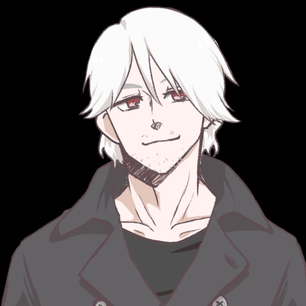
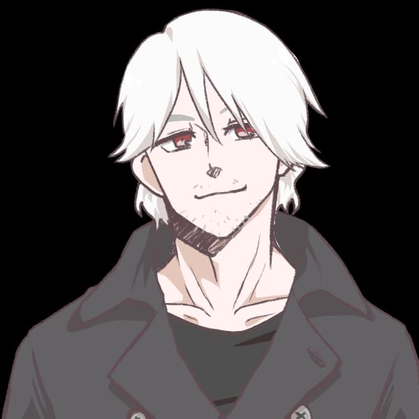
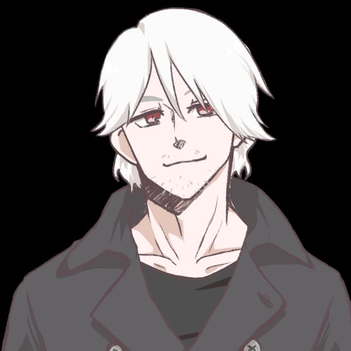

Nero Graecus
Homem branco, alto, cabelo branco, olhos, avermelhados, 23 anos.
Acrobacia: |Investigação: | Adestramento: |Luta: 10 | artes: |Medicina: | Atletismo: |Ocultismo: | Atualidades: |Percepção: | Ciências: |Pilotagem: | Crime: |Pontaria: 10 | Dipolmacia: |Profissão: | Enganação: |Reflexos: 10 | Fortitude: 5 |Religião: | Furtividade: |Sobrevivência: | Iniciativa: 5 |Tática: | Intimidação: 5 |Tecnologia: | Intuição: |Vontade: | ------------------------------------------- Informações adicionais:
Contatos com o PARANORMAL: Alto Ultimo NEX registrado: 12663-11(45%) Conhecimento sobre o oculto: básico Nível de confiança: Leal Rituais portados: Nenhum Poderes paranormais: Snvv/Snf/SnFrv Conclusão de status = Estavel
Ativ.realizada previamente: Mercenário Conhecimento bélico: Treinamento militar Preparo físico: Sob-humano Preparo mental: mediano Função = Guerreiro Comclusão de status = capacitado Local de atuação = Corvus Equipe atual = I.S.A.C-3 Missão atual = loding..... Status = Ocupacionado
Itens em posse: Custos: p2000 [1]| [ 1,5kg] R$ 115,00 Desert Ealge [1]| [ 3,0kg] R$ 175,20 Cicatrizante [1]| [ 1,5kg] R$ 54,99 Carregadores(p2000) [8]| [ 8,0kg] R$ 24,90 8x Carregadores(Degle) [6]| [ 6,0kg] R$ 34,90 6x Proteção leve(Amld) [1]| [10,0kg] R$ 750,00 Montante(prsnl) [1]| [12,5kg] R$1982,00 Amarras(Amld) [1]| [ 5,0kg] R$ 325,00 Peso total = 47,5 kg Custo total = R$ 3810,79
3
3
2
1
1


 

 
